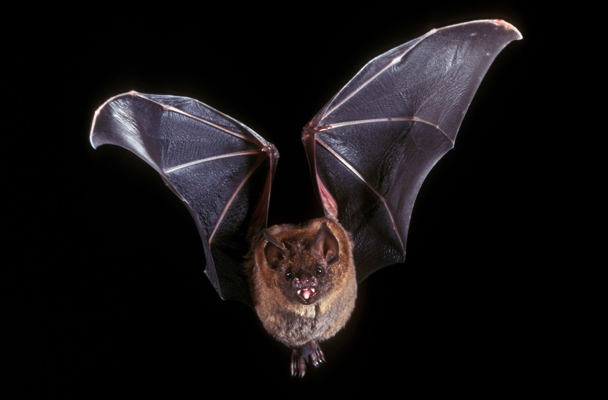

Прилепите са една от най-широко разпространените групи бозайници. Способността да летят е спомогнала на "разселването им" в различни части на планетата.
Те обитават всички континенти с изключение на Антарктида, най-северните части на Европа, Азия и Америка и някои отдалечени острови. Прилепите са се приспособили към най-разнообразен начин на живот и заемат изключително разнообразни екологични ниши.
Странният вид и потайният начин на живот на прилепите, както и това, че се ориентират в тъмното винаги е привличало вниманието на хората. В някои култури прилепите са били обожествявани, докато в християнската култура например, демоните са били изобразявани с прилепски крила (за разлика от ангелите, които са рисувани с крила на птица). Това вероятно е продиктувано от инстинктивния страх от неизвестното, от нощта, от странния вид и потаен живот на прилепите.